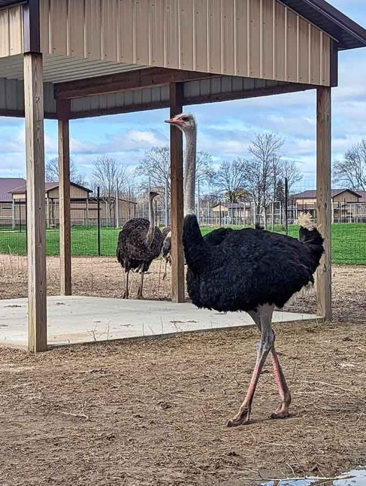
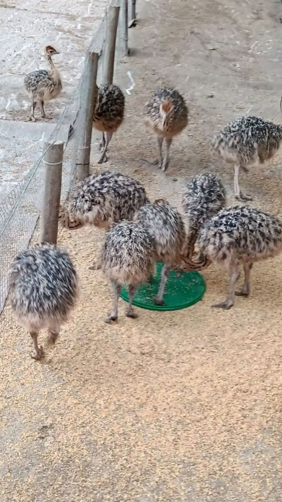
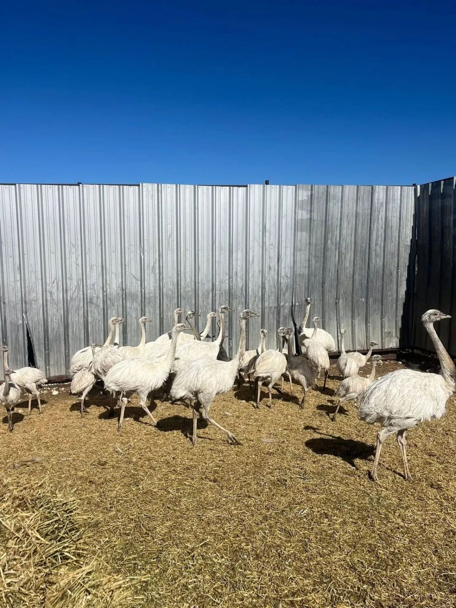
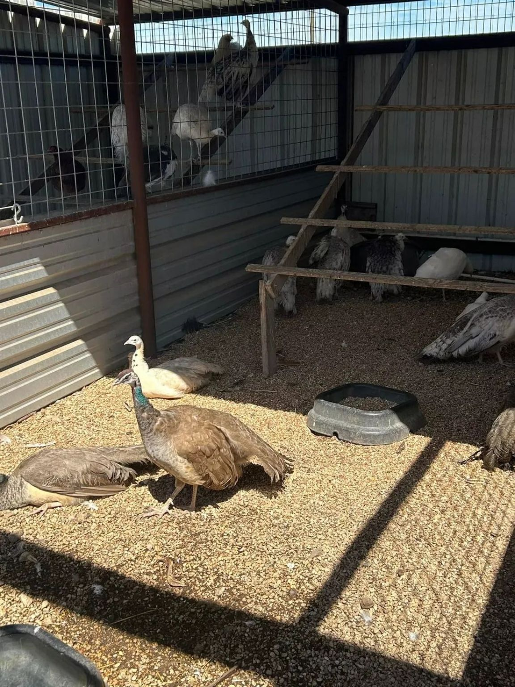
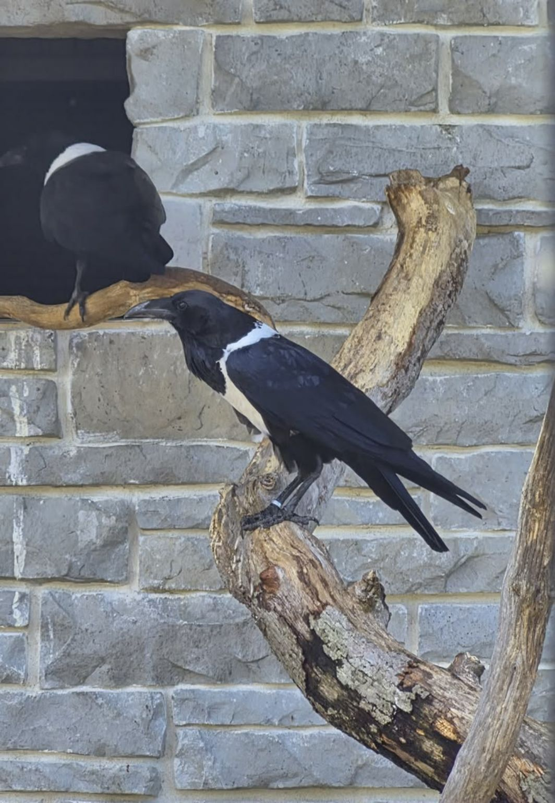
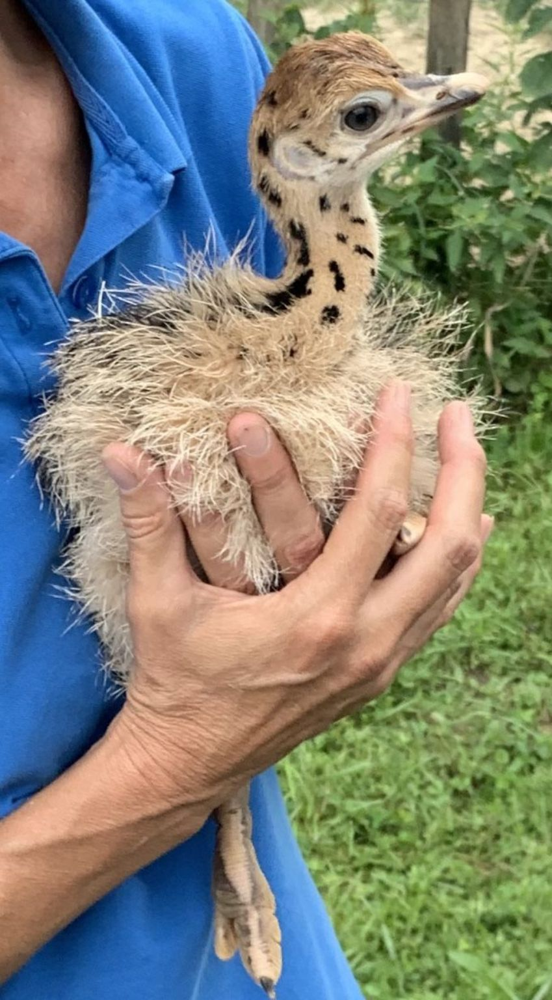
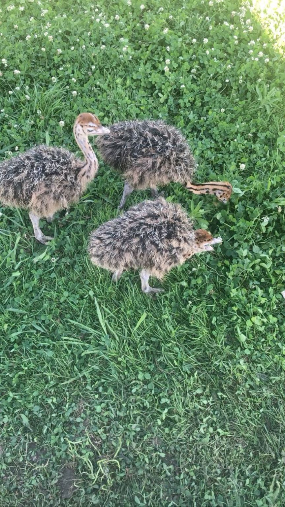
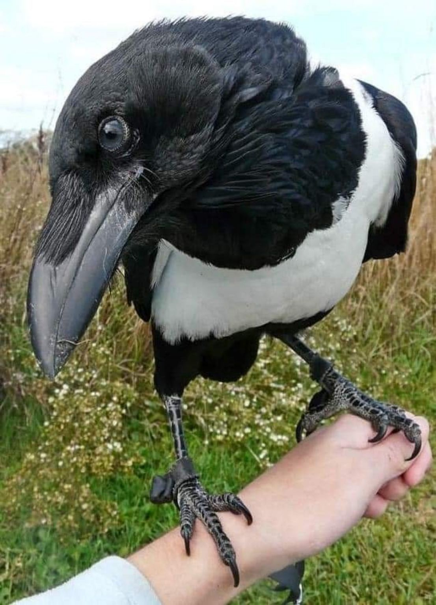
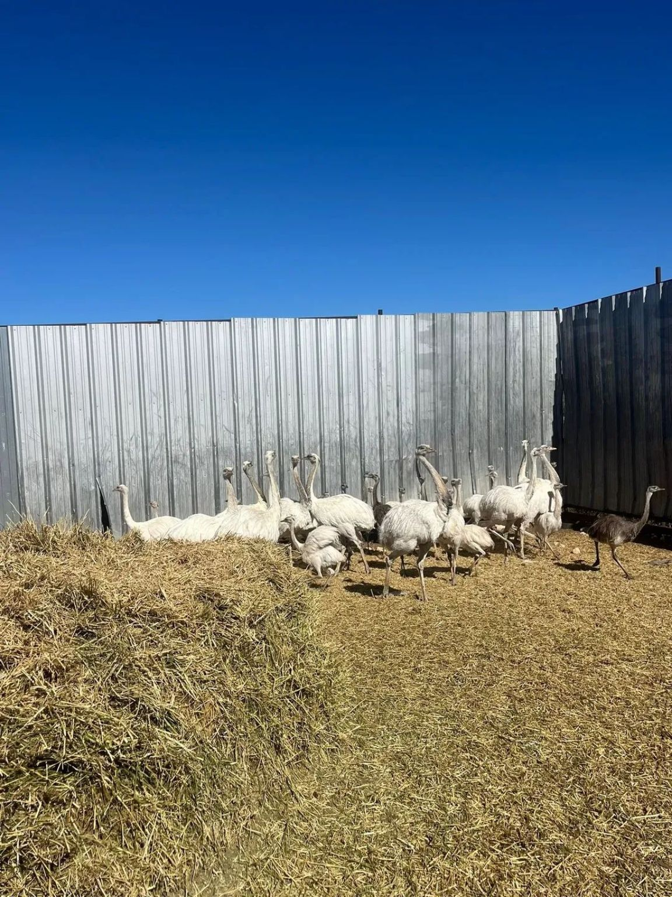
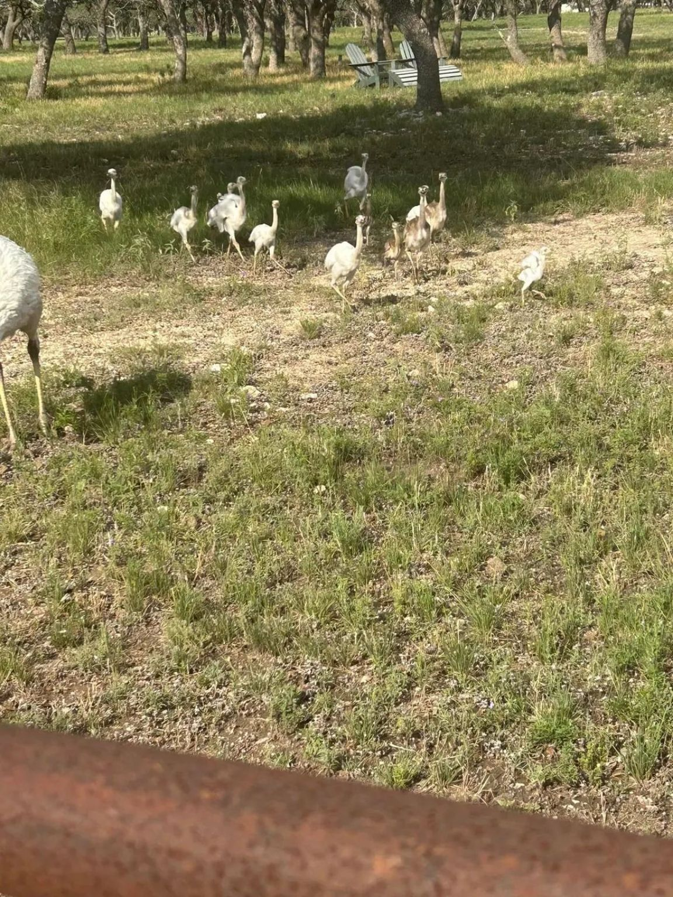

Ranch photoOUR COLLECTION
Explore the catalogue
Browse the collection and contact us for current availability, age, pricing and delivery requirements. Photographs marked “Ranch photo” show supplier-provided animals; illustrative images are clearly identified.

Ranch photo
Ranch photo
Ranch photo



Ranch photo


A LOOK AT THE RANCH
Bird & ranch photo gallery
Images are for illustration purposes. Actual animals and availability may vary.






SEASONAL COLLECTION
Fertile bird eggs
Fertile egg availability depends on breeding season, current stock and destination rules.
Images are for illustration purposes. Actual animals and availability may vary.

Emu eggs
Standard, blonde and white colour varieties.

Ostrich eggs
Enquire about seasonal fertile ostrich egg availability.

Rhea eggs
Enquire about seasonal fertile rhea egg availability.

Peacock eggs
Enquire about seasonal fertile peacock egg availability.
Photo credits: Pigeon — Don Lodge / Unsplash; parrot — Ajai S / Unsplash; pheasant — Oliver Sjoberg / Unsplash; white swan — Salvador Landeo Choy / Unsplash; black swan — Alex He / Unsplash; geese — Julia Taubitz / Unsplash and Emre ÇOBAN / Unsplash; livestock reference — Nikos Giann / Unsplash. Egg photographs: emu egg — Shuhari (CC BY-SA 3.0); ostrich eggs — Sanu N (CC BY-SA 4.0); rhea eggs — Paulo V. F. Barradas (CC BY 2.0); peafowl eggs — Damitha Pandithage (CC BY-SA 3.0). Unsplash License · CC BY-SA 3.0 · CC BY-SA 4.0 · CC BY 2.0.